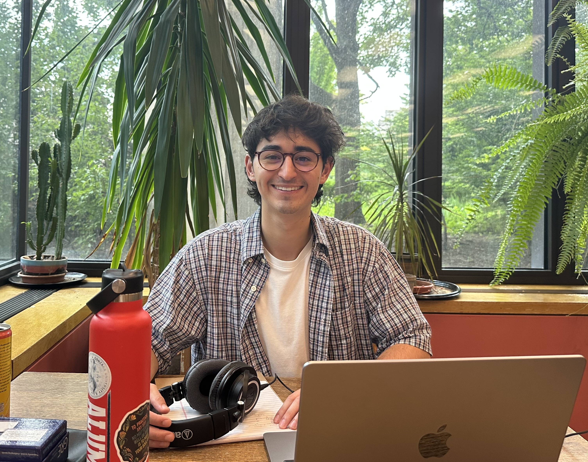

I'm a Predoctoral Research Fellow at Northwestern’s Kellogg School of Management, where I work with Dr. Jacob Teeny, Dr. Chethana Achar, and MORS faculty.
Before Kellogg, I worked in the Social Interdependence Lab at Gonzaga University with Dr. Adam Stivers and completed my thesis with the help of Dr. Rebecca Bull Schaefer.